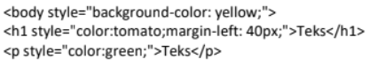
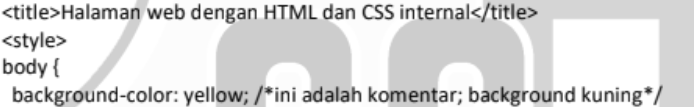
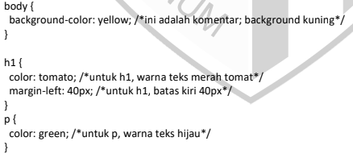

Web Pelajaran
Penempatan CSS
- Inline CSS
- Inline CSS adalah CSS yang ditulis langsung di kode HTML dengan menggunakan style="".
- Kelebihan: Mudah digunakan untuk perubahan cepat atau pengujian dan tidak memerlukan file tambahan.
- Kekurangan: Sulit dikelola untuk proyek besar dan tidak efisien untuk banyak elemen.
- Contoh penempatan CSS pada inline:

- Internal CSS
- Internal CSS adalah penempatan CSS yang ditulis di dalam tag "style" pada bagian "head" dokumen HTML.
- Kelebihan:Mempermudah pengelolaan jika hanya digunakan untuk satu halaman dan tidak memerlukan file CSS tambahan.
- Kekurangan: Tidak efisien untuk proyek dengan banyak halaman dan menambah ukuran file HTML.
- Contoh penempatan Internal CSS:

- Eksternal CSS
- Eksternal CSS adalah penempatan CSS yang ditulis dalam file terpisah dengan file HTML. CSS dihubungkan ke dokumen HTML menggunakan link.
- Kelebihan: Ideal untuk proyek besar karena mudah dikelola, meningkatkan konsistensi di banyak halaman, File CSS dapat di-cache oleh browser, dan mempercepat loading.
- Kekurangan: Membutuhkan file terpisah dan membutuhkan koneksi internet jika file di-host secara eksternal.

Iklan